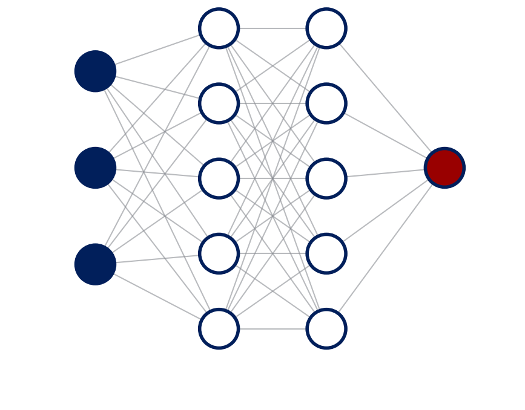
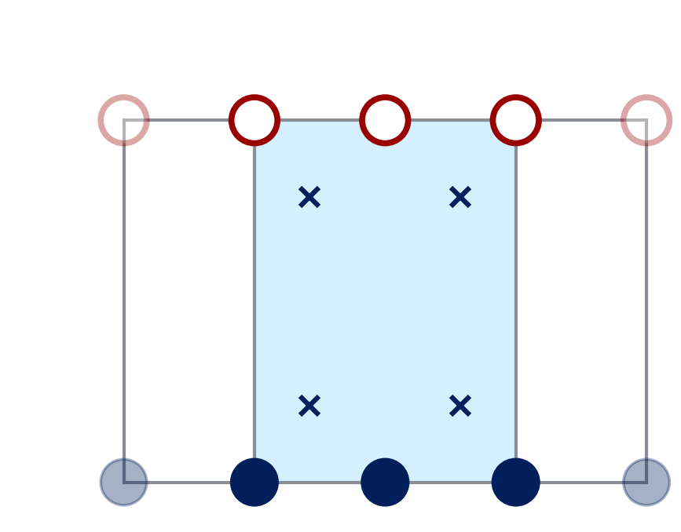
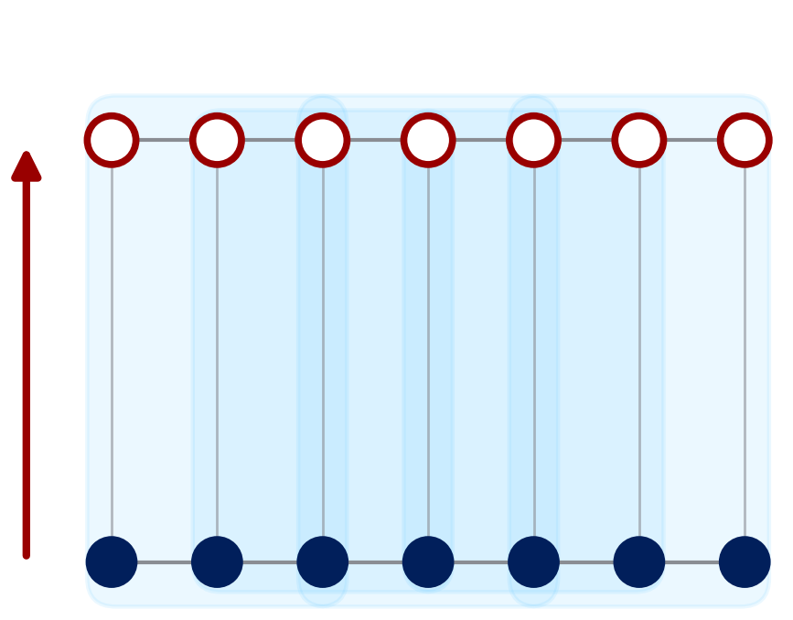
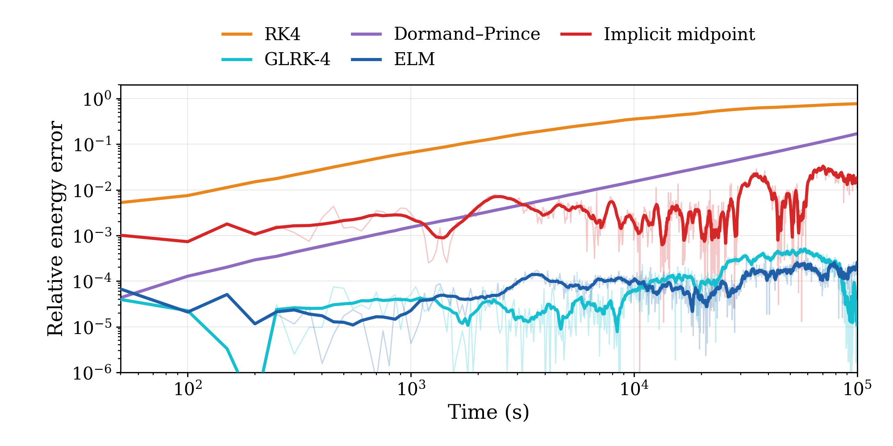
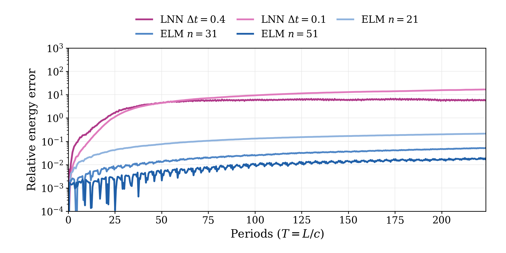
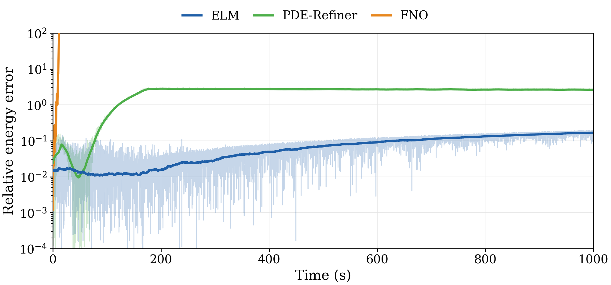
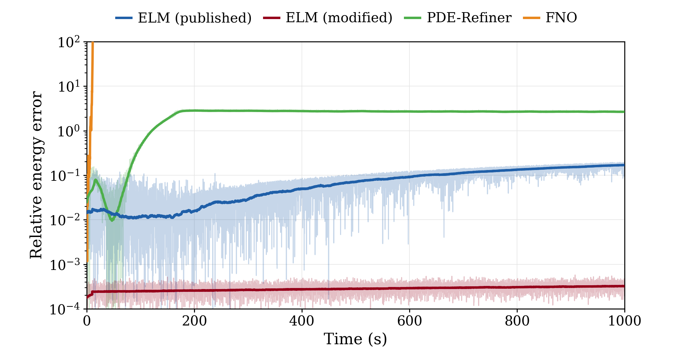

NeurIPS 2026 · Spotlight
1University of Pennsylvania · 2Montclair State University
The first variational integrator approach for learning and simulating PDEs with continuous Lagrangians, producing stable, long-horizon predictions from small neural models of physics primitives.
Modern learned models capture the underlying physics with increasing accuracy. Yet most of the focus has been on producing better next-frame predictions, with strikingly little attention paid to how these models are used for tasks where forward integration plays a central role, e.g., forward simulation, prediction and forecasting, estimation and filtering.
This oversight matters because forecasting a system's behavior places different demands on the learned model than finding a solution does. While these two uses are closely related — knowing how to produce a good local solution does help forecasting — their objectives are distinct: solving demands local accuracy and sensitivity to the equations, while forecasting demands stability and bounded long-term error. For systems that conserve energy (waves, vibrations, orbits, etc.), this distinction is particularly important as even small per-step errors compound over long simulations, eventually producing solutions that violate conservation laws and become physically meaningless.
Existing work has predominantly focused on producing better and better models of the dynamics, implicitly assuming that forecasting errors can be overcome by either more training or specialized architectures. This assumption fails most severely for chaotic systems and systems defined by partial differential equations (PDEs). Accumulated errors can violate the structure of the system, pushing a trajectory outside of the stable, learned regime, thereby causing a catastrophic failure in the prediction. Classical numerical analysis has long known that preserving structure can matter as much as per-step accuracy. For Hamiltonian and Lagrangian systems, symplectic integrators trade local fidelity for energy conservation and long-term stability. Despite this, most learned-physics methods treat the integrator as an implementation detail.
Conceptually, Euler–Lagrange Minimization (ELM) separates what a system's physics are (the Lagrangian density) from how to simulate them (the variational integrator). Given a learned Lagrangian density \(\mathcal{L}\), we want to find the path \(q\) such that the action
is stationary. As an example, for the 1D wave equation, \(\mathcal{L}(q, q_t, q_x) = \tfrac{1}{2}\mu\, q_t^2 - \tfrac{1}{2}c^2 q_x^2\). ELM is a minimization-based integrator designed for learned models, constructed at three scales. A local, pointwise residual measuring the deviation from the learned dynamics defines the error induced by a path approximated from a finite set of nodes. Starting from an initial guess, a damped Newton solve swept via Jacobi iteration across overlapping patches advances the global state without a coupled solve.

\(R=0\) is the Euler–Lagrange equation. Given an approximate path \(\hat{q}\), the squared Euler–Lagrange residual \(R^2[\hat{q} \mid (t,x)]\) is a measure of the deviation from the dynamics represented by \(\mathcal{L}\).

For a set of \(4m\) functions \(\mathcal{F}\), we construct a Hermite interpolation \(\hat{q}\) by fitting \(\mathcal{F}\) to this patch. We define the residual accumulated by this interpolation as the patch error, where \(\mathrm{Conv}(\mathcal{X})\) is the convex hull of \(\mathcal{X}\), from which we select \(n_\omega\) points \((\tilde t, \tilde x)\) and associated weights \(\omega\).

To advance the solution by one time step, we seek the node \(\gamma\) at a new coordinate \(\eta\) that minimizes the patch error given the known states. By minimizing the residual locally on overlapping patches, we bypass the global implicit solve inherent to fixed discretizations. Our method scales linearly with domain size via Jacobi iteration.
Unlike classical discrete methods that advance \(q \in Q\), ELM advances a state \((q, q_t)\) on the tangent bundle \(TQ\). From this state, the momentum is given by \(p = \partial\mathcal{L}/\partial q_t\) and the differential of the discrete action can be expressed as
When the Newton iteration converges such that \(J = 0\), \(R = 0\) at each Gauss–Legendre quadrature point and the update can be represented by a type-1 generating function to within quadrature error. For Lagrangians with a constant mass matrix, \(\mathcal{L} = \tfrac12 q_t^\top M q_t - V(q)\), the quadrature error vanishes exactly to result in a symplectic method. For PDE systems in this work, we oversample the quadrature, trading exact symplecticity for the stability of the patch solver.
Since every well-conditioned learned Lagrangian is a valid Lagrangian and represents some dynamics, the error in the learned model can only contribute to phase error while all energy drift is attributable to the integrator.
We compare ELM against four standard integrators with the same underlying learned model of the system. The non-symplectic methods (the classical Runge–Kutta (RK4) and Dormand–Prince) result in continual and steady energy accumulation. In contrast, symplectic methods conserve a discrete Hamiltonian, so while they do oscillate, they remain bounded over long time-scales. ELM matches the fourth-order Gauss–Legendre Runge–Kutta method (GLRK) since ELM is also a fourth-order method.

We compare the LNN wave model against ELM on a 1D wave equation, both using learned Lagrangians with equivalent architectures. LNN learns on a fixed discretization while ELM learns the continuous Lagrangian density. Even at the coarsest settings, ELM maintains discernible and symmetric wavefronts.
ELM shows several orders of magnitude improvement in energy conservation, improving with smaller step size, while LNN sees diminishing returns.


ELM tracks the ground truth with only minor phase drift and energy loss, while both FNO and PDE-Refiner drift within the first 20 s. While PDE-Refiner fails more gracefully than FNO, it still falls into a non-physical global oscillation. ELM achieves better overall accuracy and energy conservation with 78,000 times fewer model parameters than PDE-Refiner.
To the best of our knowledge, this is the first work to simulate a PDE with two spatial dimensions using a learned Lagrangian density over long time-horizons. The rollout is shown in the video at the top of the page.
Since learned continuous Lagrangians are pointwise, models compose and transfer to new domains without retraining.
Suppose we have two learned Lagrangians independently trained on separate homogeneous media with different wave speeds and we want to explore what happens when they are joined. Here, we represent the transition as a sharp sigmoid blend between the two Lagrangians at \(x = 1\). The wave partially reflects and partially transmits at the interface, exactly as waves behave when they hit an impedance barrier.
The same flexibility extends to 2D. A driven wave hits a barrier with two slits, producing interference fringes. This uses the identical model from the 2D wave; barriers, slits, and driven boundaries are enforced purely through constraints on the degrees of freedom.
The operator baselines have no comparable method for transferring to this domain.
With a small modification to the method, we can formally prove symplecticity for the class of PDEs we examine. Using the same frozen models on the same hardware, the modified step runs faster per step, and the 2D energy error stays flat instead of growing. More details will be available in upcoming work.

A learned continuous Lagrangian with local minimization can compose and transfer across domains without retraining, acting as a physics primitive. Operator-based methods, which fuse dynamics with discretization, cannot transfer this way.
We argue that the integrator deserves the same care as the model to achieve flexible physics-learning systems. ELM offers a starting point for learned models that can be deployed, constrained, and combined at inference time rather than retrained per scenario.
@inproceedings{zhornyak2026elm,
title = {Learned Lagrangian Models of {PDEs} via
{Euler--Lagrange} Residual Minimization},
author = {Zhornyak, Lyra and Forgoston, Eric and Hsieh, M. Ani},
booktitle = {Advances in Neural Information Processing Systems},
year = {2026}
}